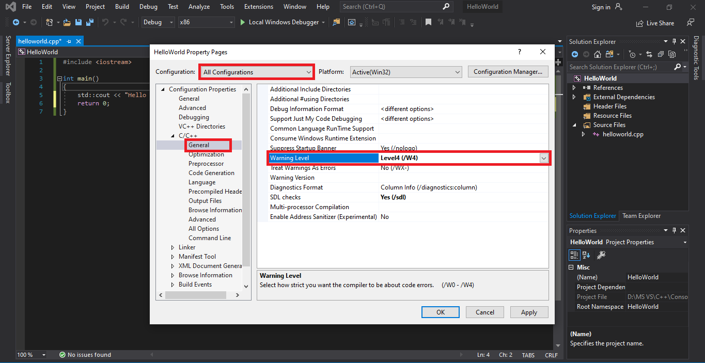

Khi bạn viết một chương trình, compiler sẽ đảm bảo bạn tuân thủ các quy tắc của C++ tiêu chuẩn (trong trường hợp bạn đã tắt compiler extension). Nếu bạn vi phạm các quy tắc đó, compiler sẽ cho ra error bao gồm các thông tin về error như vị trí bị lỗi và loại lỗi.
Trong một số trường hợp khác, compiler phát hiện ra phần code giống như error nhưng lại không chắc. Những trường hợp đó được gọi là warning. Warning không làm ảnh hưởng đến việc biên dịch nhưng compiler vẫn sẽ thông báo cho bạn với ý như muốn nói "Mr Stark, I don't feel so good".
Lời khuyên: Nếu thấy warning, bạn nên tìm cách để sửa nó cho dù chương trình bạn chạy bình thường, hãy xem nó như là error.
Mặc định, compiler của bạn sẽ chỉ thông báo những warning thường gặp, có một số bị bỏ qua. Và trong Visual Studio, bạn có thể tăng giảm mức độ warning theo ý muốn. Mình khuyên bạn nên để mức cao để nó báo những warning dù nhỏ nhất, điều này rất tốt cho người mới học lập trình.
Cách tăng warning level
Các bạn vào lại Properties của project như đã làm ở bài trước. Nhưng lần này bạn chọn mục General trong C/C++; ở mục Warning level, các bạn chọn Level4 (/W4).
Note: Tuyệt đối không chọn EnableAllWarnings (/Wall), tin mình đi, bạn chắc chắn sẽ không muốn chọn nó đâu 🙂. Phần Treat Warnings As Errors các bạn phải để No (/WX-) nhé.